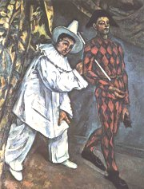

Komedie dell'arte v umění
Postavy komedie dell'arte zachytila řada výtvarných umělců. Například kreslíř Jacques Callot [kalo] (1592-1635), rokokový malíř Antoine Watteau [vató] (1684-1721) nebo grafik Recueil Fossard. Znovu se k nim vrátili moderní i avantgardní umělci – Paul Cézanne (1839-1906) a Pablo Picasso (1881-1973). Maurice Sand (1823-1889) o nich napsal knihu Masky a šaškové. Komedie dell'arte našla ohlas i v českém umění. O mimovi Deburauovi vypráví životopisný román Františka Kožíka Největší z pierotů. Mim Ladislav Fialka (1931-1991) tuto masku znovu oživil přímo na jevišti.
|
Komedie dell'arte
Na konci renesance vznikl v Itálii nový druh divadla – komedie dell'arte. Tato představení se velmi lišila od tradičního dramatu. Jejich jádrem byla herecká improvizace, komické výstupy (lazzi), postavy v typických kostýmech i s předem daným charakterem (masky) a stručné scénáře popisující děj hry, ve kterých chybějí dialogy. Komedie dell'arte hráli nejdříve amatéři, později profesionální soubory, pro městské i dvorské publikum. Většinou šlo o komedie s velmi drsným humorem. Toto divadlo si oblíbili nejen diváci v Itálii, ale také v Paříži. Komedie dell'arte se bez výrazných proměn provozovala i v době baroka (stručné scénáře nebylo snadné cenzurovat) a klasicismu. Čerpal z ní Molière [moljér] (1622-1673), který s komedií dell'arte musel soutěžit o zájem diváků a věnoval se jí i Carlo Goldoni (1707-1793). V 18. století komedie dell'arte jako celek zaniká, ale některé masky přetrvávají v baletu a pantomimě, které byly vedle zpěvu její nedílnou součástí. Jsou to především postavy kolombíny, harlekýna a pierota. Nejznámějším představitelem pierota byl mim českého původu Jean-Baptiste Gaspard Deburau [žan batist gaspár debiro] (1796-1846). Někteří herci přešli k cirkusům, kde vystupovali jako artisti nebo klauni. Postavy z komedie dell'arte využívá také loutkové divadlo.
|
Rod komedie dell'arte
Kořeny komedie dell'arte sahají až do antiky. První scénáře vycházejí z Plautových komedií přeložených v době renesance do italštiny. Tyto scénáře byly velmi oblíbené mezi učenými humanisty, kteří je nahlas předčítali nebo přímo inscenovali a později podle jejich vzoru psali vlastní hry. Masky si komedie dell'arte vypůjčila z místních masopustních slavností – benátských karnevalů. Komické výstupy čerpaly z krátkých představení bavičů, kteří často vystupovali na tržištích, aby přilákali zákazníky obchodníkům, především šarlatánům. Komedie dell'arte má také velmi blízko k středověké frašce.
|
Masky
Škraboška pro masku dottore
|
Masky
Nejvýraznějším rozdílem mezi klasickými dramaty a komedií dell'arte bylo využití masek. Herci skutečně používali škrabošky, které vznikly už dříve pro karnevalová kuklení a umožňovaly hercům, aby zůstali nepoznáni. Velmi pestré byly i herecké kostýmy. To jsou ale pouze vnější znaky, které pro diváka na první pohled ukazovaly charakter jednotlivých postav. Obecenstvo tak okamžitě po příchodu herce na jeviště vědělo, zda vystupuje milovník, sluha, pán nebo učenec. Postavy neměly skoro žádný psychologický vývoj, pouze reprezentovaly konkrétní typy a představitele dobové společnosti. A protože šlo o komedie, většinou je zesměšňovaly.
|
Na Watteauově obraze je zachycen pierot, harlekýn, scapino a milenecký pár.
|
Staří neboli vecchi
Obrázkový „scénář“ komedie dell’arte od Fossarda.
|
Staří neboli vecchi
K maskám starců (vecchi) patřili pantalon a dottore. Pantalon často vystupuje jako otec, který brání své dceři nebo synovi ve sňatku s milovanou osobou. Aby hra skončila šťastně, musejí ho milenci nějak obelhat. Také to bývá záletník, který se dvoří mladým děvčatům a vůbec se snaží předstírat mladické zájmy i chování, což je nedůstojné jeho věku a působí to vždy komicky. Dva pantaloni si nejlépe popovídají o svých chorobách a neduzích… Dottore je učený hlupák, který toho hodně namluví, ale většinou se ukáže, že ničemu pořádně nerozumí. Snadno upadá do léček, je nepraktický, plete si slova a jeho „učenost" vždy prohrává se zdravým selským rozumem. Může to být lékař, advokát, filozof nebo vědec.
|

Sand: Dottore a pulcinella
|
Sluhové neboli zanni

Cézanne: Masopustní úterý
|
Sluhové neboli zanni
Nejdůležitějšími komickými postavami v komediích dell'arte byli sluhové (zanni), kteří pocházeli z venkova a vystupovali ve dvojici. První byl šikovný a chytrý, druhý byl hloupý nešika. Zatímco jeden diváky baví, druhý v nich vzbuzuje soucit. Aby byla zdůrazněna jejich komičnost, mluvily tyto masky nářečím, herci používali obscénní výrazy a chovali se velmi obhrouble a drze. Patří sem nejslavnější postavy komedií dell'arte – mazaný harlekýn (arlecchino) a naivní pierot (pedrolino), dále prohnaný brighella, popleta scapino, taškář mezzetino, poživačný pulcinella či chvástavý coviello. Vzhledem k velkému počtu typů se všichni sluhové v jedné hře nevyskytují, autoři si většinou vybírali pouze dva vhodné protějšky. Ženskými obdobami zanni byla služebná frantesca (servetta, subreta) a výřečná kolombína.
Další masky
Vážnými postavami byli milenci, kteří nesměli v komediích chybět. Výběr ostatních masek záležel na autorovi. Cizince hrál vychloubačný capitano (na oko hrdina, ale ve skutečnosti zbabělec). V jeho postavě Italové zesměšňovali španělské důstojníky, kteří dobyli značnou část jejich země. Podobné charakterové vlastnosti má skaramuš, ten je ale obvykle sluhou. Tartaglia [tartalia] je koktavý právník nebo sluha, jehož promluvy jsou plné komických přebrebtů.
|

Kolombína

|
Představení

Fossardova ilustrace
|
Představení
Scénář komedie dell'arte měl většinou jen pár stránek, které stručně popisovaly děj a důležité situace. Nejstarší dochovaný scénář pochází z roku 1568. Celkem se dochovalo přibližně 1000 textů her. Autoři čerpali náměty v antických komediích, renesančních milostných povídkách a adaptovali pro své potřeby i klasická dramata současníků (např. Caderóna). Místo obvyklých pěti aktů měly komedie dell'arte pouze tři dějství.
Scénář sloužil jako podklad k herecké improvizaci. Protože neobsahoval dialogy, museli si je herci sami vymýšlet. Pokud se sešli schopní a zkušení profesionálové, bylo divadelní představením velkým zážitkem, v opačném případě mohlo dopadnout velmi špatně. Dialogy doplňovaly tzv. lazzi (předem připravené komické, pantomimické, akrobatické nebo baletní výstupy, gagy, slovní hříčky atd.), a když začala být populární opera, také písně, které ji parodovaly. Nároky na dovednosti herců byly tudíž velmi vysoké. Rozhodně si nemohli dovolit diváka nudit, protože by příště nepřišel.
|

|
Flaminio Scala

Scalova sbírka scénářů komedie dell’arte
|
Flaminio Scala: Pedant
Flaminio Scala [skala] je autorem nejstarší sbírky scénářů komedie dell’arte. Vyšla v roce 1611 a obsahuje 50 textů her. Scala přejímal náměty z nejrůznějších zdrojů. Autor si vystačil s krátkým načrtnutím děje, které zabralo pouze několik stránek, zbytek zůstal na bedrech herců a jejich schopnosti improvizovat a vymýšlet dialogy. Komedie Pedant rozehrává příběh neúspěšného svůdníka.
|
Sand: Harlekýn a pantalon

Koho dnes označujeme výrazem pedant?
|
Biancolelli

Picasso: Sedící harlekýn
|
Giuseppe Domenico Biancolelli:
Čistota Harlekýna krále Tripolského
Giuseppe Domenico Biancolelli je autorem sbírky 73 scénářů, jejíž originál se bohužel nedochoval. Naštěstí máme jeho překlad do francouzštiny. Komedie Čistota Harlekýna krále Tripolského dává zazářit představiteli Harlekýna, který se vydává za krále.
|
Titulní strana spisu Niccola Barbieriho z roku 1634
|
Jan Kašpar Deburau

Picasso: Pierot
|
František Kožík: Největší z pierotů
Český spisovatel František Kožík psal svůj román Největší z pierotů v časech nacistické okupace. V době ohrožení samotné existence českého národa chtěl ukázat, že Čechy daly světu řadu slavných osobností, například právě mima Jana Kašpara (Jean Gaspard) Deburaua.
|
Watteau: Gilles
Co nového ses dozvěděl/a z ukázky?
|
Internetové stránky
Commedia dell’arte
Commedia dell’arte
Commedia dell’arte
Commedia dell’arte
Commedia dell’arte
Commedia dell’arte
Commedia dell’arte
Commedia dell’arte, masky
Watteau, obrazy
Pokus se odvodit, jaký kostým je typický pro danou masku.
Sehrajte představení ve stylu komedie dell’arte.
|
Doporučená četba
Blahník, V.K.: Světové dějiny divadla, Praha 1929
Brockett, O.G.: Dějiny divadla, přel. M.Lukeš, NLN, Praha 1999
Brooknerová, A.: Antoine Watteau, Praha 1969
Brůna, Otakar: Největší pieroti, ETC Publishing, Praha 1998
Bukáček, J.: Carlo Goldoni, osobnost a doba, Praha 1957
Frejka, Jiří: Smích a divadelní maska, Úvodní poznámky o vzniku typů dnešní komedie dell’arte, Praha 1942
Goethe, J.W.: Italská cesta, Praha 1983
Goldoni, Carlo: Komedie, Praha 1954
Jan Kašpar Deburau, Praha 1960
Kazda, Jaromír: Kapitoly z dějin divadla
Kožík, František: Největší z pierotů
Kratochvíl, Karel: Komedie dell'arte doma i za hranicemi, Praha 1973
Kratochvíl, K.: Ze světa komedie dell’arte, Panorama, Praha 1987
Rémy, T.: Jan Kašpar Deburau, Praha 1960
Rémy, T.: Klauniády, Praha 1968
Sadoul, Georges: Jacques Callot, Zrcadlo své doby, 1592-1635, přel. D.Plichta, SNKLU, Praha 1964
Švehla, Jaroslav: Deburau, nesmrtelný Pierrot, Praha 1976
Švehla, J.: Tisícileté umění pantomimy, Melantrich, Praha 1989
|
Připrav si referát o některé z uvedených knih nebo internetových stránek.

Oblečení lékaře v době moru
|
|